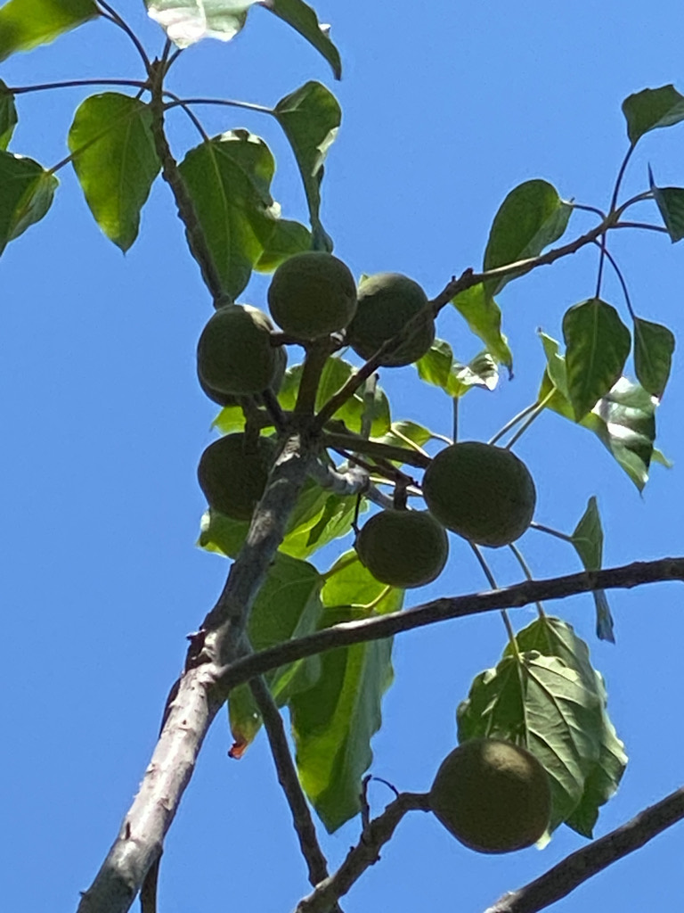

- Ancient Hawaiians strung kukui seeds on coconut-spine wicks and burned them as candles — sequentially, one by one — so the tree functioned as both lamp and clock. That trick works because the seeds are roughly 80 percent oil by weight: biological fuel cells, not just nuts.
- Hawaii named the kukui its official state tree in 1959 — the same year it became a state — honoring a plant woven into every facet of traditional life: light, medicine, dye, canoe-building, tattooing, and food. It is one of the most culturally complete trees in Polynesian history.
- Those pale, silvery-green leaves are not decoration. The star-shaped hairs coating every surface reflect light so distinctly that a kukui grove shimmers on a hillside in a way almost nothing else does — and that shimmer mattered: Hawaiian travelers used the canopy as a landmark, the same tree that fed and lit them also guided them home.
- The kukui is not native to Hawaii. Polynesian voyagers packed it into their canoes — probably as early as 300 CE — crossing thousands of miles of open ocean with seeds of a tree too essential to leave behind, then watched it naturalize so completely that centuries later it became the official state tree.
The Kukui Tree is native to tropical Asia, most likely the Maluku (Moluccas) Islands of eastern Indonesia, and its natural range extends through Malaysia and into the western Pacific.
Its exact original distribution is difficult to pin down precisely because it was carried so widely by humans so early — by the time botanists began mapping it, it had already been naturalized across Southeast Asia and the Pacific for centuries.
Polynesian voyagers brought it to Hawaii, likely as early as 300 CE, as one of a suite of essential 'canoe plants' — species too useful to leave behind. It naturalized so thoroughly in the Hawaiian Islands that it became the official state tree in 1959.
From Hawaii and tropical botanical gardens, it spread through ornamental horticulture into frost-free landscapes worldwide, including South Florida, where it is grown as an ornamental shade tree in USDA Zone 10 and warmer areas.
- The genus name Aleurites comes from the Greek word for 'floury' or 'whitened' — a reference to the pale, powdery bloom on young leaves and shoots. The species epithet moluccanus points directly to the Moluccan Islands of Indonesia, which is also where the common name Indian Walnut originates, though the tree is no relation to the true walnuts of genus Juglans.
- In Hawaii the tree occupies a genuinely remarkable place in material culture. Hawaiians used the oil for stone lamps and ti-leaf torches, the wood for lightweight canoes and fishnet floats, the nut soot as a tattooing pigment, the inner bark as a red-brown dye for kapa cloth, and the bark latex to strengthen that same cloth. Almost nothing went to waste.
- Here is the culinary paradox the tree presents: a raw seed that causes violent gastric distress undergoes a near-complete chemical transformation through the simple application of heat.
- Roast it, and the phorbol esters and saponins responsible for that toxicity break down, and what remains is a rich, oily kernel that became indispensable in two completely distinct food cultures — inamona, the pounded-and-salted Hawaiian relish central to traditional poke, and kemiri, the creamy thickening paste at the backbone of Indonesian and Malaysian curry.
- Across Southeast Asia the tree has an equally long practical history beyond the kitchen. Seed oil is pressed for paints, varnishes, and soaps; the press cake makes a nitrogen-rich fertilizer; and the tree itself is used in reforestation projects because of its fast growth and soil-improving properties.
The small white flowers, borne in fragrant clusters at the tips of branches, attract bees and other generalist pollinators. In Hawaii, bees working kukui flowers produce a distinctly flavored honey — evidence of real pollinator interest in the blooms.
The heavy annual crop of oily fruits provides food for wildlife that can process the seeds; feral pigs in Hawaii have historically sought out fallen nuts.
Because the Kukui Tree has no co-evolutionary history with Florida's insect fauna, it does not function as a larval host for native butterflies or moths. Visitors looking for the park's best butterfly habitat will find it in the native plantings nearby.
Small, white, five-petaled, and fragrant; borne in branched clusters at the tips of branches. Male and female flowers occur on the same tree (monoecious). Blooming tends to occur in warmer months.
Round to slightly flattened drupes, roughly 1.5 to 2 inches across, with a leathery green-brown skin that darkens to black at full maturity. Each fruit contains one or two seeds enclosed in a very hard, rough shell. A single mature tree can produce 75 to 100 pounds of fruit per year.
The seed kernel inside the hard shell is cream-colored, dense, and extraordinarily oily — roughly 80 percent oil by weight. The shell itself is so hard it must be cracked mechanically or soaked for weeks before it will germinate reliably. Raw kernels are toxic.
Alternate, broadly ovate, and notably pale — silvery or light green on both surfaces from a fine coating of stellate (star-shaped) hairs. Young growth is often distinctly lobed with three to five lobes; mature leaves on established branches tend to be less lobed and more ovate. Petioles can reach 8 inches, with two small glands at the junction with the blade.
The pale, light-reflecting quality of the foliage is one of the easiest ways to identify this tree from a distance.
Trunk is typically single and straight with smooth to lightly furrowed gray-brown bark. The crown is broad and spreading, often as wide as the tree is tall, with branches tending to angle upward then arch outward. Overall habit is a rounded, densely leafed canopy.
Start with the Silver Shimmer: take a step back and watch how the star-shaped hairs on every leaf surface catch the Florida sunlight — the whole canopy glows pale against darker neighbors in a way that is almost impossible to miss.
Then Track the Leaf Metamorphosis: find a young low-growing shoot and compare its dramatically lobed, maple-like outline to the simpler ovals overhead; you are watching the same tree change its growth language as it matures. Finally, Locate the Stone Vaults: scan the branch tips for clusters of round, greenish-black drupes roughly the size of golf balls.
Pick one up — the shell is nearly stone-hard, an almost comically over-engineered vault protecting the oil-saturated kernel within.
Raw seeds from this tree are a genuine hazard — keep children and pets away from fallen nuts. Eating even a small amount of raw kernel can cause severe vomiting, abdominal cramps, and diarrhea; the culprits are phorbol esters and saponins concentrated in the raw seed, and cases have been reported to poison control centers.
The good news is that both compounds are heat-labile: sustained cooking at roasting temperatures breaks them down almost entirely, which is precisely why traditional Hawaiian and Indonesian cooks could transform this toxic seed into inamona and kemiri without harm. The sap can also irritate sensitive skin, so washing hands after handling cut stems or damaged fruit is a reasonable precaution.
The spelling of the species epithet varies between sources: moluccanus (masculine, agreeing with Aleurites as treated masculine) and moluccana (feminine). Both forms appear in authoritative literature; the Atlas of Florida Plants and USDA PLANTS use moluccanus, which is the form used here.
Kukui nut oil remains a commercially significant product today, used in cosmetics, skin-care preparations, and soaps — visitors may have encountered it in Hawaiian resort spa products without recognizing the source.


- © Mary Getten (CC-BY-NC), via iNaturalist